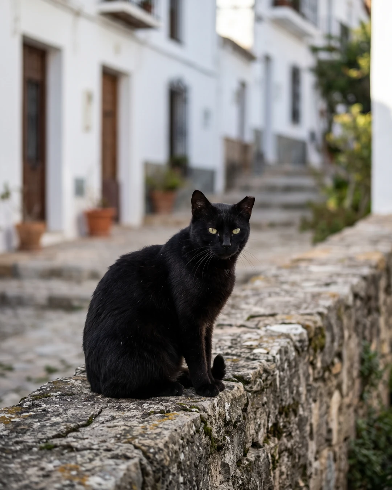

Caso n.º 24 · Gatos
Sobre este caso
El caso n.º 24 está cerrado. Fue el caso diario del 24 de noviembre de 2026 y su tema fue Gatos. Los detectives de aquel día tuvieron dos retos: cinco imágenes que clasificar en fotografías reales y generadas por IA, y cinco afirmaciones de una frase que clasificar en datos y bulos.
- Imágenes generadas por IA: 3 de 5
- Bulos: 2 de 5
Aquí tienes todas las respuestas. Cada imagen generada por IA trae el prompt que la creó, y cada afirmación, la verdad que hay detrás y los detalles que merece la pena recordar, para que compruebes qué se te escapó.
Uno de los bulos: «En los años 70, durante un breve periodo se eligió a un gato como rey en Egipto.» La verdad: No hay ningún registro histórico; en los años 70 Egipto era una república presidida por Anwar el-Sadat.
¿Quieres afinar la vista? Lee nuestra guía para detectar imágenes de IA o nuestra guía para detectar un bulo y luego juega el caso de hoy.
Imágenes
-
Imagen 1

REAL
Fotografía real
-
Imagen 2

REAL
Fotografía real
-
Imagen 3

IA
La confesión del sospechoso
Un gato atigrado dormido sobre el respaldo de un sofá junto a una ventana, con la luz de la tarde entrando de lado y algunos pelos sueltos en la tapicería; 50 mm a f/2, enfoque en la cara y el resto algo desenfocado.
-
Imagen 4

IA
La confesión del sospechoso
Un gato callejero negro sentado en un muro de piedra de un pueblo, mirando de reojo a la cámara, con una oreja con una pequeña muesca; teleobjetivo de 135 mm y fondo de fachadas encaladas desenfocado.
-
Imagen 5

IA
La confesión del sospechoso
Dos gatitos jugando en el suelo de madera de un salón, uno de ellos movido en pleno salto, con una pelota de lana y un trozo de alfombra en el encuadre; luz de ventana lateral.
¿Dato o Bulo?
-
Afirmación 1
BULO «En los años 70, durante un breve periodo se eligió a un gato como rey en Egipto.»
No hay ningún registro histórico; en los años 70 Egipto era una república presidida por Anwar el-Sadat.
- El gato Stubbs sí fue alcalde honorario de Talkeetna (Alaska) durante 20 años.
-
Afirmación 2
DATO «Los gatos poseen cristales en el oído interno que funcionan como un giroscopio y les dan un equilibrio casi perfecto.»
Diminutos cristales de carbonato de calcio llamados otolitos informan al cerebro de la posición exacta de la cabeza respecto a la gravedad.
- Son responsables del reflejo de enderezamiento que les permite caer de pie.
-
Afirmación 3
DATO «En 1988, un británico falleció y dejó su fortuna de 7 millones de libras esterlinas exclusivamente a su último gato vivo.»
El anticuario Ben Rea legó unos 7 millones de libras a Blackie, el último de sus 15 gatos, que aún tiene el récord Guinness del gato más rico.
- Prefirió no dejar el dinero a su familia.
-
Afirmación 4
BULO «Un algoritmo de Google descubrió que el ronroneo de los gatos con hambre se emite a la misma frecuencia de manera universal.»
No lo descubrió ningún algoritmo; en 2009 la bióloga Karen McComb (Universidad de Sussex) halló un llanto de bebé camuflado en el ronroneo.
- Este «ronroneo de solicitud» esconde un maullido agudo de unos 220 a 520 Hz.
- Apela directamente a nuestro instinto de crianza.
-
Afirmación 5
DATO «El ronroneo de los gatos acelera la curación de tendones y tejidos blandos, en el gato y en los humanos que están en contacto con él.»
Ronronean a una frecuencia constante de 25 a 150 Hz, rango que estudios veterinarios asocian a más densidad ósea, menos dolor y tendones que sanan antes.
- Los beneficios pasarían a quien los abraza o los tiene sobre el cuerpo.